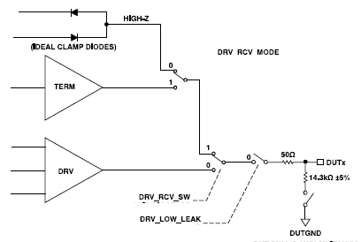

Pin Scale 1600 Card
Clamps are active when the Driver is in "high Z" mode. If the driver is active the clamps are de- activated.

Functional changes
- Introduced in SmarTest 7.1.1
- SmarTest 7.2.1: Added clamp circuitry for PS1600 card.
Clamps are active when the Driver is in "high Z" mode. If the driver is active the clamps are de- activated.
